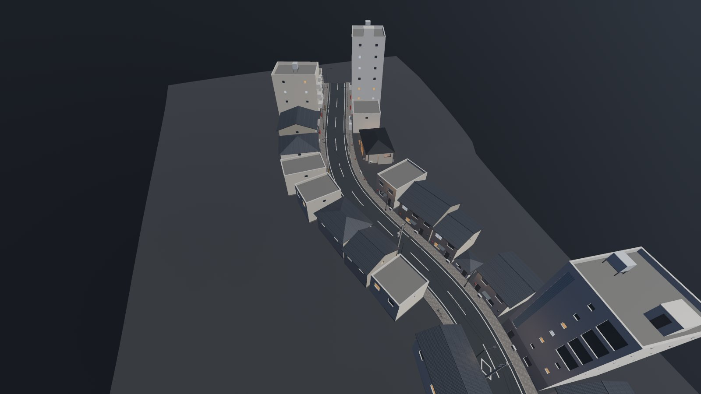

Godot by hand: setting up
The studio's editors make the pieces: rooms in the scene builder, streets in the street builder,
people in the Character Studio. Each has an Export for Godot button that puts a
.glb in the studio's Exports/ folder. This guide sets up a Godot project to build the rest
yourself: drag those in, light them and write the game.
1By hand, or the Director
Two ways to make a game in Godot with the studio:
By hand (this guide)
Your own Godot project. The studio's exports are plain .glb scenes you drag
in, and you write the game in GDScript: the player, the doors, the scares. Nothing to learn but Godot. The
first game walks it through.
With the Director
The studio's Godot plugin: rooms, doors and things as nodes, the story in one file (quests, conversations, endings), the studio's runtime doing the walking, the inventory, the HUD and the saves. Its guide.
They mix. The Look plugin (its guide) works in both, and an exported room or street dropped into a Director project is a model like any other.
2A project
The quick way. From the studio's folder, one command makes the project with everything below in it:
python tools/godot_byhand.py new ~/Games/MyGame
project.godot
The Look plugin switched on and its balanced settings (§3).
addons/horrorstudio_look/
The Look plugin: the look, wet floors, rain, blood, mirrors, flickering lights, the character's skin, eyes and hair.
HumanShaders/
The skin's and the eyes' textures (MIT). It must sit at the project's root under that name: the plugin looks for res://HumanShaders/.
starter/
The first game's scripts: a first-person player, doors, a scare. Yours to change.
exports/
interiors/, streets/, characters/: where the studio's exports go (§4).
Open it in Godot 4.7: the Project Manager's Import, then pick its project.godot.
By hand instead. In the Project Manager, New Project, the Forward+ renderer. Then copy two folders from the studio into the project's folder:
GodotPlugins/HorrorStudioLook/addons/horrorstudio_look | → addons/horrorstudio_look (the name kept: its scripts load their shaders by that path) |
GodotPlugins/HumanShaders | → HumanShaders, at the project's root |
guides/first_game/starter | → starter (if you want the first game's scripts) |
Then Project → Project Settings → Plugins and tick HorrorStudio Look. The first time it's switched on it writes its balanced settings into the project.
python tools/godot_byhand.py install ~/Games/MyGame. It leaves your starter/ alone.3The settings that matter
Enabling the Look plugin sets these, and Project → Tools → HorrorStudio: apply the balanced project settings sets them again. They're aimed at a GTX 1060.
| Rendering → Occlusion Culling → Use Occlusion Culling | On. The exports carry occluders (*-occonly), so what's behind a wall isn't drawn. |
| Rendering → Anti Aliasing | TAA on, MSAA off (MSAA switches off the wet floors' screen-space reflections). |
| Rendering → Lights and Shadows | A 4096 shadow atlas, soft shadows. |
| Rendering → Environment | SSAO and SSR at half size, the volumetric fog's buffer kept small. |
Leave the renderer on Forward+: the look's effects (SSR, SSAO, volumetric fog) need it. Some settings only show with Advanced Settings switched on, at the top right of Project Settings.
4Bringing in the exports
Each export is a folder of its own in the studio's Exports/, with its .glb and a
README.txt saying what's in it:
Drag the folder from your file manager into Godot's FileSystem dock, into exports/interiors/ (or
the street's, or the character's). Godot imports the .glb into a scene. To use it, drag the
.glb into your scene (or onto a node in the Scene dock) and it's an instance there.
Godot reads the export's names as it imports. That's how it all works with no setup:
…-colonly | The mesh becomes a StaticBody3D with its collision shape and isn't drawn: what you walk on and bump into. |
…-occonly | The mesh becomes an OccluderInstance3D: occlusion culling. |
| lights | A lamp comes in as an OmniLight3D or a SpotLight3D. |
| extras | What a node is (a door's hinge, a marker's kind, a room's size) is in its metadata, under extras: node.get_meta("extras"). |
Exporting again writes the same file in the studio's Exports/. Drag it in again, or make the
project's exports/ links to the studio's, so a new export is in the project straight away (Godot imports
it when you come back to the editor):
python tools/godot_byhand.py exports ~/Games/MyGame --link
.glb and choose New Inherited Scene to make a scene of your own from it.5An interior
The scene builder's Export for Godot (its toolbar) writes the level you're looking at as the 3D
view shows it: Exports/interiors/<set>/ for a set, <game>_<level> for a game's level.

The outside is in the export when the scene builder's 3D view shows it (the outside box in the view's bar). It makes the level a whole building standing alone. Leave it out when the level goes inside a street's walk-in building: the street has that shell already, and two shells in one place flicker.
A door is a node on its hinge. Its metadata says which way it opens (opens: the sign of the Y turn),
whether it slides (slide) and its width. The starter's door.gd uses those.
6A street
The street builder's Export for Godot writes Exports/streets/<name>/
(Shift-click it to download the file instead).

A walk-in building (a set inside, put there in the street builder) is a shell with its doors and windows cut
through it. The level goes at its marker, insides/inside_<building>…, and the README names each one. Export that set
from the scene builder (without its outside) and stand it there. The starter's interior.gd does it
(the first game, step 6).
7A character
The Character Studio's Export for Godot (its header) writes the character for the desk and
the Director as before, then its copy in Exports/characters/<name>/ with MHR's 72 face shapes
baked in as blend shapes.
- A skeleton: MHR's, so the studio's Kimodo clips fit it (through the Director's library, or Godot's retargeting).
- Blend shapes:
jawDrop,eyesClosed_L,lipCornerPuller_R… (Meta's names), for faces and talking. Key them in an AnimationPlayer. - Its look: its colours come baked as plain PBR, so it looks right anywhere. For the studio's own skin, eyes and hair, give it an
HSCharacterLook child (Add Child Node, type
HSCharacterLook). It puts them on when the game runs. - Its pose: it's exported in MHR's pose, with its arms out. The starter's
arms_down.gd, on a node under it, brings them down.
8Lighting it
- The look: add an HSLookEnvironment (a WorldEnvironment) and untick its
Editor Only, so it stays in the game.balancedis the default;realismoverplays it. Or drag inaddons/horrorstudio_look/presets/look_balanced.tscn(the environment, a tape and a grade). - The lamps come with the exports. Turn on
Shadowon the ones that matter (they come in without shadows), and delete the ones you'd rather place yourself. - The sun or the moon: a DirectionalLight3D. A dim blue one at 0.15 to 0.2 makes a night.
- A room's lights kept in the room: an HSLightZone the room's size owns the lights inside it.
- Bounce light: a VoxelGI over the house, then Bake. It's cheap, and enough for small rooms.
- Flicker, rain, wet floors, a mirror: the Look plugin's nodes, in its guide.
9A player
The starter's player.tscn is a first-person body (a CharacterBody3D with a
Camera3D at 1.6 m). Drag it into the scene where the game starts:
| W A S D | walk (Shift runs); it steps up anything up to half a metre, like a kerb, a genkan's step or a raised floor |
| mouse | look |
| E | use what's in front of you: anything with a use() method, such as a door |
| F | the flashlight |
| Esc | let the mouse go (a click takes it back) |
An interior's markers/player_start is where its level starts the player. Stand the player there, or anywhere you like.
10Playing and shipping
Project → Project Settings → Application → Run → Main Scene picks the scene F5 plays (F6 plays the one open). To ship it: Project → Export…, add a Windows Desktop and a Linux preset, and download the export templates when Godot asks.
.glb itself (its skin's and eyes' records), and an exported game leaves source files out. In the export preset's
Resources tab, put *.glb in Filters to export non-resource files.11When something's wrong
| The character's skin is flat white or pink | HumanShaders/ isn't at the project's root (§2), or the plugin isn't enabled. |
| The player falls through the floor | The export's colliders didn't come in. Look for StaticBody3D nodes under the instance (Editable Children). If there are none, export again from the studio. |
| The player can't get up a step | Higher than its step_height (0.5 m). Raise it on the player, or add a ramp. |
| A line flickers along a wall or a floor | Two surfaces in one plane. The studio's editors keep their own pieces apart (the street page's Check finds what's been placed so); in Godot, two exports overlapping do it, such as an interior with its outside inside a street's shell. |
| It's black | No lights and no environment: add an HSLookEnvironment with Editor Only off, and a light. |
| A door doesn't open | The interior's instance needs interior.gd (or the door door.gd), and the player's aim must reach it (2 m). |